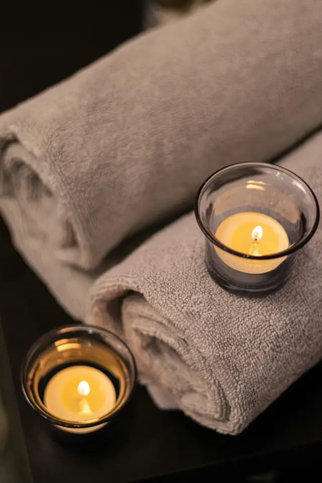
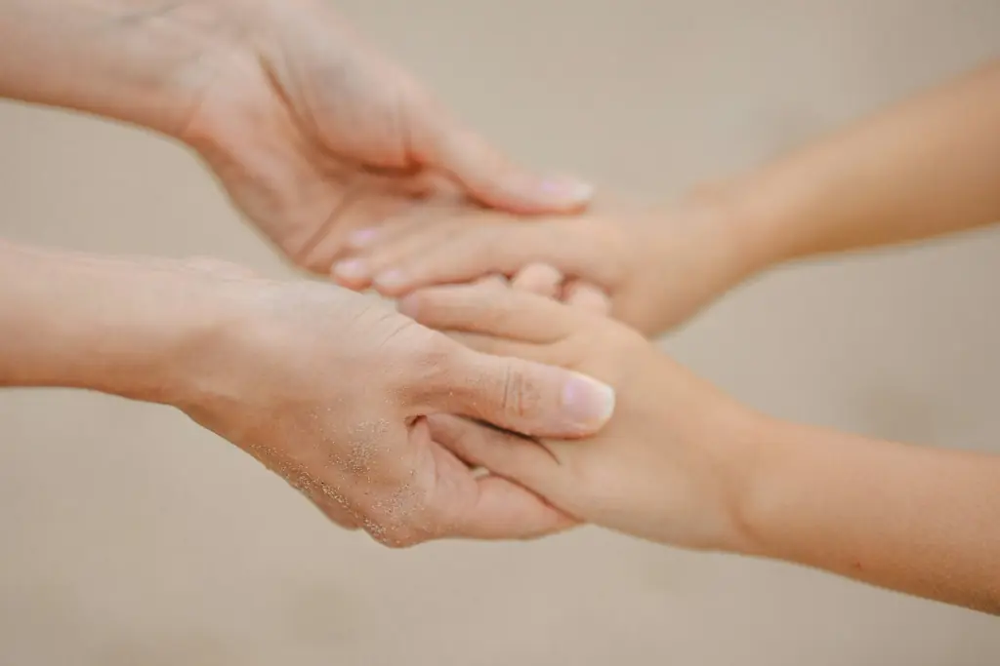
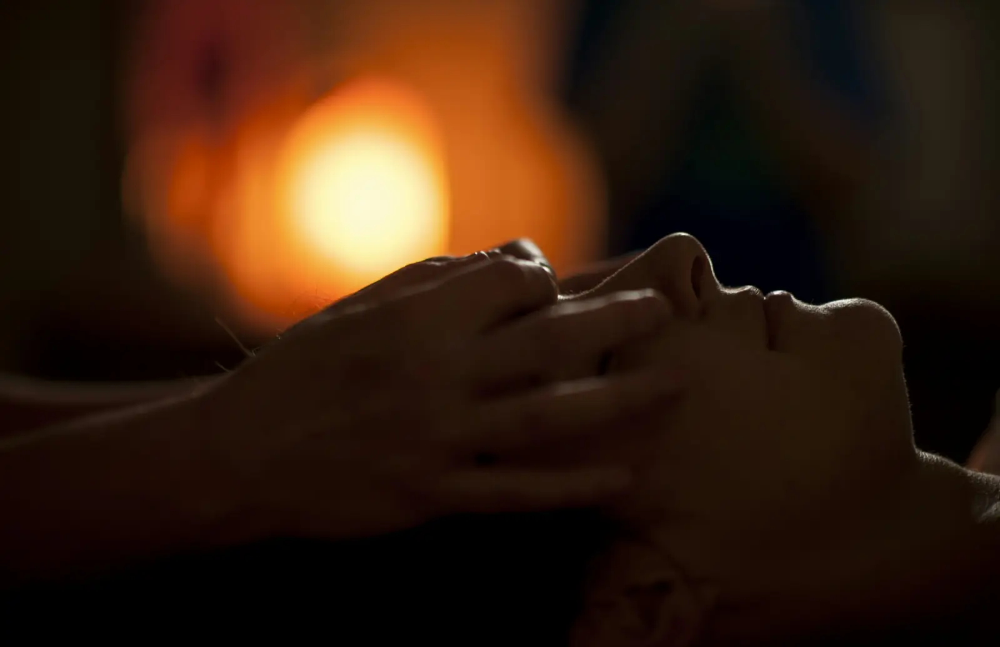

01
01
Massaggio terapeutico e classico
Il massaggio per eccellenza: scioglie tensioni e contratture, migliora la circolazione e restituisce mobilità a muscoli e articolazioni. Ideale per dolori a schiena, collo e spalle.
Massaggi terapeutici · Comano, Lugano
Sono Federica, massaggiatrice terapeutica riconosciuta RME. Ascolto il tuo corpo e le tue esigenze per aiutarti a stare bene, che si tratti di un fastidio fisico o di un bisogno di relax.




Chi sono
Ho sempre osservato la postura delle persone e ho sempre avuto a cuore il loro benessere. Da questa attenzione è nata la passione per il massaggio, e da questa passione è nata Fedemassaggi.
Il mio lavoro parte dall'ascolto: prima di ogni trattamento mi prendo il tempo di capire come stai, cosa senti e di cosa hai bisogno. Poi lavoro con semplicità, professionalità e serietà, adattando ogni seduta a te.
Sono riconosciuta RME dal 2019, con formazione CSTM e OLEOS e diversi corsi di aggiornamento. Ricevo nel mio studio di Comano, sopra Lugano, con orari flessibili.
Federica Meier De Vecchi
Massaggi e trattamenti
Problemi fisici o bisogno di relax: scegliamo insieme il trattamento più adatto. Ogni seduta dura almeno 60 minuti.
01
Il massaggio per eccellenza: scioglie tensioni e contratture, migliora la circolazione e restituisce mobilità a muscoli e articolazioni. Ideale per dolori a schiena, collo e spalle.
 02
02
Pre e post performance: prepara i muscoli allo sforzo, accelera il recupero e aiuta a prevenire gli infortuni. Per chi corre, pedala, nuota o si allena con costanza.
 03
03
Un lavoro lento e profondo sul tessuto connettivo, la fascia, per liberare le aderenze e ridare elasticità ai tessuti. Utile in caso di rigidità e dolori persistenti.
 04
04
Manovre delicate e ritmiche che stimolano la circolazione linfatica: riducono gonfiore e ritenzione e lasciano una piacevole sensazione di leggerezza.
 05
05
Per staccare davvero: un massaggio avvolgente che allenta le tensioni accumulate e calma la mente. Il tuo tempo, solo per te.
 06
06
Pietre basaltiche calde appoggiate e fatte scorrere sul corpo: il calore penetra in profondità, scioglie i muscoli e regala un rilassamento intenso.
 07
07
Pressioni mirate su punti specifici del piede che, secondo la riflessologia, corrispondono ai diversi organi e apparati. Un trattamento che riequilibra e rilassa tutto il corpo.
 08
08
Un massaggio eseguito con strumenti in legno di forme diverse: modella, tonifica e stimola la circolazione, contrastando ritenzione e cellulite.
Non sai quale scegliere? Raccontami di cosa hai bisogno e ti consiglio io.
Chiedi un consiglio
È il tempo che hai perduto per il tuo corpo che ha reso la tua anima così importante.
Come funziona
Un ambiente semplice e familiare, dove ti senti a tuo agio fin dal primo contatto.
Un messaggio su WhatsApp o una telefonata: troviamo insieme il giorno e l'orario più comodi per te.
Prima di iniziare parliamo di come stai, delle tue abitudini e di eventuali fastidi o dolori.
Almeno 60 minuti dedicati solo a te, con un massaggio pensato per le tue esigenze.
Ti lascio qualche consiglio per mantenere a lungo i benefici del trattamento.
Casse malati
Sono iscritta al Registro di Medicina Empirica (RME). Il massaggio terapeutico, il massaggio classico e il linfodrenaggio manuale possono quindi essere rimborsati dalla tua assicurazione complementare.
Ti consiglio di verificare la tua copertura con la cassa malati prima della seduta.
Promozioni e novità

Per un compleanno, per Natale o semplicemente per dire grazie. Il buono è personalizzabile: lo prepariamo insieme, per il trattamento che preferisci.
Richiedi un buonoIl massaggio con strumenti in legno che modella, tonifica e riattiva la circolazione. Chiedimi di provarlo.
Scopri il trattamentoPer chi vuole prendersi cura di sé con continuità. Scrivimi per conoscere le promozioni in corso.
Chiedi le promozioniDomande frequenti
Hai un'altra domanda? Scrivimi pure, ti rispondo volentieri.
Ogni trattamento dura almeno 60 minuti, così c'è il tempo per ascoltarti prima di iniziare e per lavorare con calma.
Sono riconosciuta RME: massaggio terapeutico, massaggio classico e linfodrenaggio manuale possono essere rimborsati dall'assicurazione complementare. Conviene verificare la propria copertura con la cassa malati.
In contanti, con TWINT oppure su fattura.
Con un messaggio su WhatsApp o una telefonata al 079 475 44 35. Gli orari sono flessibili e li concordiamo insieme.
A Comano, sopra Lugano, in Via Centro TV 1. C'è un parcheggio privato e la fermata del bus è a pochi passi.
Italiano, tedesco, francese, inglese e spagnolo.

Contatti
Scrivimi su WhatsApp o chiamami: ti rispondo appena possibile e troviamo insieme il momento giusto.
Su appuntamento, con orari flessibili.
Parcheggio privato, bus a pochi passi.